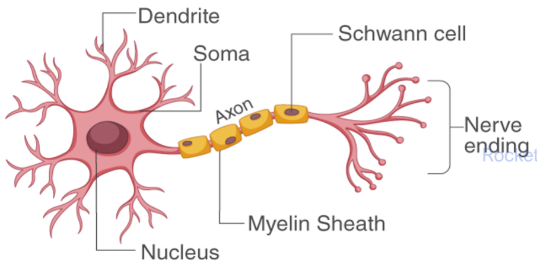
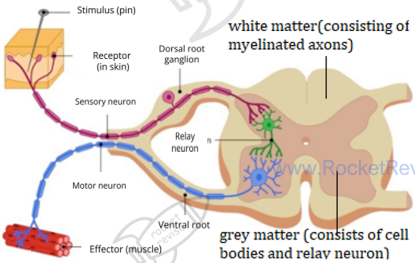
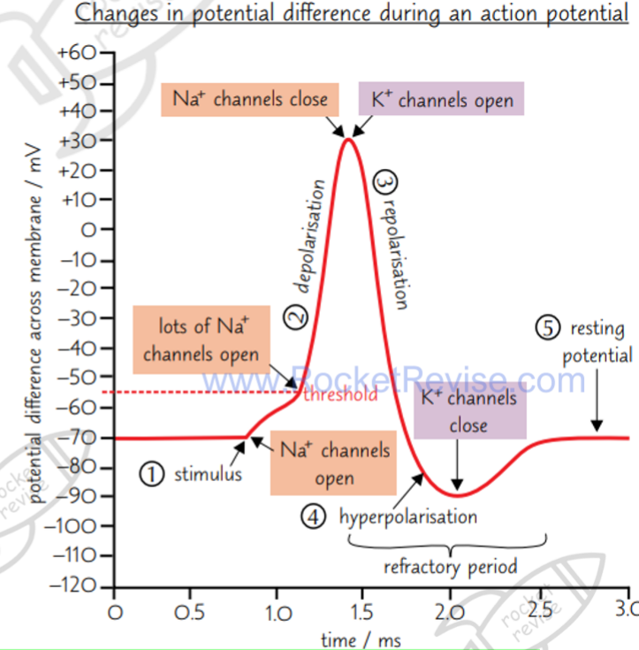

Nervous System and Coordination
Coordination means one part of the body responds to a change detected in another part. The nervous system does this with electrical impulses that travel along neurones, and the hormonal system does it with chemical messengers in the blood. This page covers neurone structure, the nerve impulse and synapses, the reflex arc, the effects of drugs on synapses, and how hormones act.
Organisation of the nervous system
The nervous system is a network of interconnected neurones. The central nervous system (CNS) is the brain and spinal cord, where information is processed. The peripheral nervous system (PNS) connects the CNS to the rest of the body. Sensory neurones carry impulses from receptors into the CNS, and motor neurones carry impulses from the CNS to effectors such as muscles and glands.
The motor part of the PNS splits into two divisions. The somatic division controls voluntary skeletal muscle. The autonomic division controls involuntary activity in smooth muscle, cardiac muscle and glands. Within the autonomic system, the sympathetic division prepares the body for action by raising metabolic rate (fight or flight). The parasympathetic division does the opposite and conserves energy (rest and digest).
Neurone structure
A neurone has a cell body containing the nucleus. The cell body is compact and enclosed by a membrane, and it contains Nissl granules, which are rough endoplasmic reticulum and ribosomes used to make neurotransmitters. Short branching dendrites bring impulses towards the cell body. A single long axon carries impulses away from it.
Many axons are wrapped in a myelin sheath, made by Schwann cells that coil their membrane around the axon many times. The myelin is a lipid-rich insulator. The gaps between adjacent Schwann cells are called nodes of Ranvier. Myelin matters because the current cannot leak through it, so depolarisation only happens at the nodes. The impulse therefore jumps from node to node. This is called saltatory conduction, and it is much faster than conduction along an unmyelinated axon. Breakdown of the myelin sheath causes multiple sclerosis, which slows or blocks transmission.

Types of neurone and the reflex arc
The three neurone types differ in where they sit and how they are built. Sensory neurones have a cell body off to one side of the fibre, with a long dendron running to the receptor and a short axon into the CNS. Motor neurones have a cell body at one end, many short dendrites, and a long myelinated axon ending at the effector. Relay neurones lie entirely within the CNS, have short axons and are not myelinated. They pass impulses from sensory to motor neurones.
A reflex arc is the simplest nervous response. It is the pathway from a receptor to an effector without involving conscious parts of the brain. If the pathway goes through the spinal cord but not the brain, it is called a spinal reflex. The stages are: a receptor detects the stimulus; a sensory neurone carries the impulse into the spinal cord; a relay neurone passes it across a synapse; a motor neurone carries it to the effector; the effector responds. Reflexes are fast because they bypass the brain. In the spinal cord, the cell bodies of relay neurones lie in the grey matter, while the myelinated axons that form the white matter carry impulses up and down the cord.

The resting potential
A neurone at rest is polarised: the inside is about −70 mV relative to the outside. This is produced by the sodium-potassium pump, which uses ATP to move three Na+ out of the cell for every two K+ moved in. The pump builds concentration gradients for both ions. The membrane is much more permeable to K+ than to Na+ at rest, so K+ leaks out down its gradient. This leaves the inside negative, which pulls K+ back in. At −70 mV the two forces balance, so there is no net movement of potassium. Na+ cannot leak back in quickly because few sodium channels are open.
The pump is essential because without it the gradients would run down and the membrane potential would disappear.
The action potential
When a stimulus arrives, the membrane becomes more permeable to Na+, and voltage-gated sodium channels open. Na+ rushes in, and the inside becomes positive. This is depolarisation. If the change reaches the threshold (about −55 mV), more sodium channels open in a positive feedback loop, and the potential rises rapidly to about +30 to +40 mV. The sodium channels then close and inactivate, while voltage-gated potassium channels open more slowly. K+ leaves the cell, which repolarises the membrane. The K+ channels close slowly, so too many K+ leave and the membrane briefly becomes hyperpolarised, reaching about −90 mV. The pump and leak channels then restore the resting potential.

Resting potential: the inside of the axon is about −70 mV compared with the outside. The sodium-potassium pump moves 3 Na+ out for every 2 K+ in, and K+ leaks out through open potassium channels. The voltage-gated Na+ and K+ channels are closed.
Depolarisation: a stimulus opens some sodium channels and Na+ diffuses in, so the inside becomes less negative. If the potential reaches the threshold of about −55 mV, voltage-gated sodium channels open.
If threshold is not reached, no action potential is produced and the membrane returns to rest.
Na+ floods in, which opens more voltage-gated sodium channels (positive feedback). The potential rises rapidly to about +30 to +40 mV, so the inside is now positive.
Repolarisation: the sodium channels close and are inactivated, and voltage-gated potassium channels open. K+ diffuses out, so the inside becomes negative again.
Hyperpolarisation: the potassium channels are slow to close, so too many K+ leave and the potential falls below the resting value, to about −90 mV.
Refractory period: while the sodium channels are inactivated, no new action potential can start (absolute refractory period). As they recover, only a larger than normal stimulus can start one (relative refractory period). The potassium channels close, and the pump and leak channels restore the resting potential of −70 mV.
The refractory period keeps impulses separate and makes them travel in one direction only.
- Threshold: the membrane potential that must be reached before an action potential is generated, about −55 mV here.
- All-or-none: once threshold is reached, every action potential has the same size, whatever the strength of the stimulus.
- Absolute refractory period: the sodium channels are inactivated, so no new action potential can start.
- Relative refractory period: a larger than normal stimulus can trigger another action potential, because the membrane is still hyperpolarised.
The refractory period has a useful consequence. An action potential cannot travel backwards, because the part of the membrane just behind the wave is still refractory. The impulse therefore moves in one direction only.
A stronger stimulus does not produce a larger action potential. It produces more action potentials per second. Stronger stimuli depolarise the receptor more, so they reach threshold more often, and the impulse frequency rises. Two inputs that are too small to reach threshold alone can still fire a neurone if they add together. Spatial summation combines inputs from several neurones at the same time. Temporal summation combines rapid repeated inputs from one neurone.
You can test threshold, all-or-none and the refractory period on the model below.
Synapses and acetylcholine
Neurones are separated from the next cell by a synapse, a small gap called the synaptic cleft. When an action potential reaches the presynaptic knob, voltage-gated calcium channels open and Ca2+ flows in. The calcium triggers synaptic vesicles to fuse with the presynaptic membrane and release their neurotransmitter into the cleft. The transmitter diffuses across and binds to receptors on the postsynaptic membrane. In a cholinergic synapse, the transmitter is acetylcholine, and its receptors open sodium channels, so the postsynaptic cell depolarises.
The synapse then has to be cleared quickly, or the signal would keep firing. The enzyme acetylcholinesterase breaks acetylcholine into acetate and choline. These products are taken back into the presynaptic knob and rebuilt into acetylcholine, using ATP from the many mitochondria in the knob. The synapse is one-way: only the presynaptic knob holds vesicles, and only the postsynaptic membrane has receptors. A single neurone can also receive inputs from many others (convergence), and one neurone can send signals to many others (divergence).
Neurotransmitters can be excitatory, making the postsynaptic membrane more likely to fire, or inhibitory, making it less likely to fire.
The model below shows how the effects of several synapses add together.
Drugs that act at synapses
Drugs change nerve transmission by copying, blocking or altering the steps at a synapse. An agonist increases the effect of a transmitter, for example by stopping its breakdown or by blocking its reuptake. An antagonist reduces the effect, for example by blocking the receptor or by stopping release.
- Nicotine: mimics acetylcholine and binds its receptors, opening the channels. With repeated exposure the receptor becomes desensitised and stops responding for a time, which is why it does not simply keep stimulating the synapse.
- Lidocaine: a local anaesthetic that blocks voltage-gated sodium channels in sensory neurones. Without sodium entry, no action potential is set up, so no pain signal reaches the brain.
- Cobra alpha toxin: binds acetylcholine receptors at the neuromuscular junction and blocks them, so muscles are not stimulated. Paralysis of breathing muscles can cause death.
- L-DOPA: used to treat Parkinson's disease, which involves the death of dopamine-producing neurones. Dopamine itself cannot cross the blood-brain barrier, but L-DOPA can. It is converted into dopamine in the brain, which restores transmission and reduces tremor and stiffness.
- MDMA (ecstasy): blocks the reuptake of serotonin into the presynaptic neurone and causes it to be released. Serotonin stays in the synapse for longer, so the postsynaptic neurones keep being stimulated.
Exam tip: for any drug question, name the step it affects (release, binding, breakdown or reuptake) and say whether the net effect is more or less transmission. Vague answers like "it affects the brain" will not score.
Hormones and coordination
Hormones are chemical messengers released into the blood by endocrine glands, which have no ducts. Each hormone acts only on target cells that carry its receptor. Hormones are needed in small amounts and act more slowly than nerve impulses, but their effects can last much longer. Exocrine glands, by contrast, release their secretions through ducts. The pancreas is both: its islets of Langerhans are endocrine, and its acinar cells are exocrine.
Most hormonal control uses negative feedback. A rising level of the stimulus triggers hormone release, and the hormone then lowers the stimulus, which reduces the release. The pituitary gland is controlled by the hypothalamus. Neurosecretory cells in the hypothalamus release releasing factors into a special blood supply that reaches the anterior pituitary, and they store and release hormones such as ADH and oxytocin from the posterior pituitary.
The way a hormone acts depends on whether it can cross the cell membrane. Peptide hormones are too large and polar to enter cells, so they bind surface receptors and trigger a signalling cascade inside. Steroid hormones are lipid-soluble, so they pass through the membrane and bind receptors inside the cell. The steroid–receptor complex then acts as a transcription factor, switching specific genes on or off so that the cell makes different proteins.
Transcription factors are central to this. They are proteins that bind to the promoter region of a gene and help RNA polymerase assemble at the start of transcription. Activators assist the assembly and switch the gene on. Repressors block it and keep the gene off. Some transcription factors are present in all cells, while others are made only in particular cell types or at particular stages of development.
Quick checks
What is the main reason the impulse travels in one direction along an axon?
The region behind the wave is still repolarising or hyperpolarised, and its sodium channels are inactivated. It cannot be depolarised again, so the wave can only move forwards. Calcium is involved in synaptic transmission, not in conduction along the axon.
Which change would make a postsynaptic neurone MORE likely to fire?
Acetylcholinesterase clears acetylcholine from the cleft. If it is blocked, acetylcholine stays longer and keeps stimulating the postsynaptic membrane, so firing is more likely. Blocking receptors or calcium entry would reduce transmission.
Why does a stronger stimulus not change the size of the action potential?
An action potential either happens or it does not. A stronger stimulus reaches threshold more often, so more impulses are fired per second, but each one is the same size.
Why can L-DOPA treat Parkinson's disease when dopamine cannot?
Dopamine cannot cross the blood-brain barrier, so giving it directly does not help. L-DOPA crosses, and it is turned into dopamine in the brain, restoring transmission. It does not stop the loss of neurones.